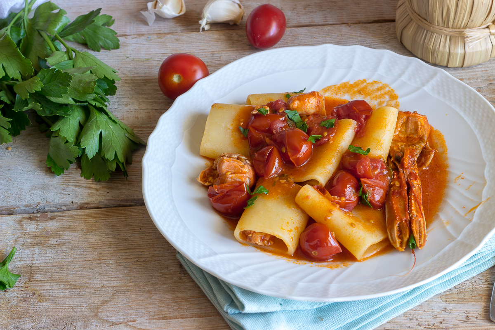
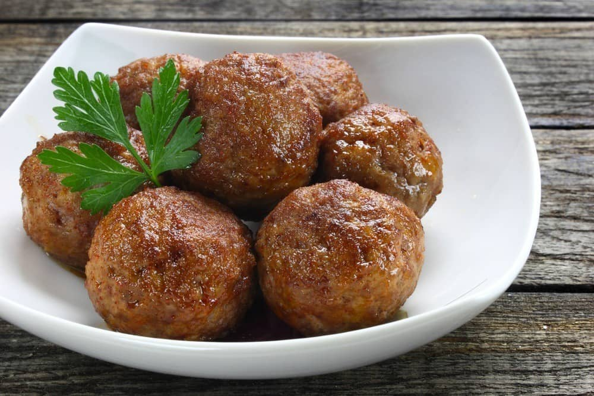

Home
Menu
Gallery
Contact

Fish Gorumet Menù
Crespelle ragù of Tuna and Sicilian pecorino cream
Paccheri alla norma and fish ragù
Raw tuna in raspberry vinegar and sour cream

Meat Gorumet Menù
Rice, mazzarella and seasonal vegetables
Gnocchi made of potato, pumpkin cream and Sicilian sausage
Beef meatball, tomato and tuma